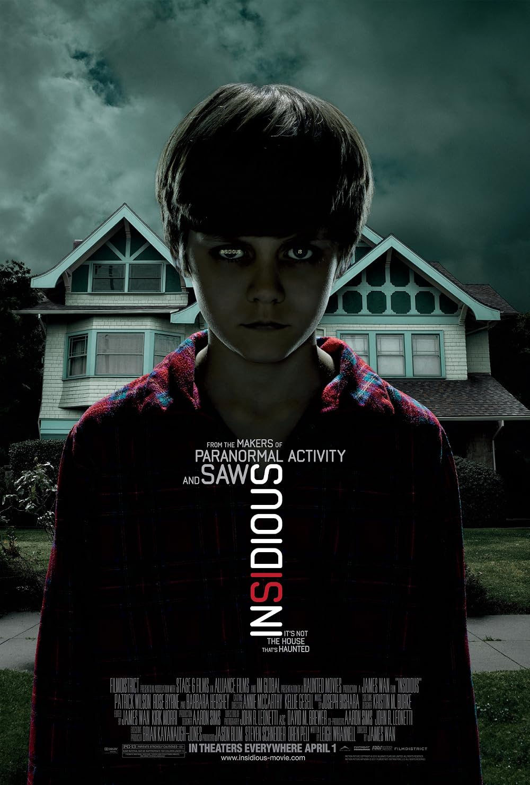
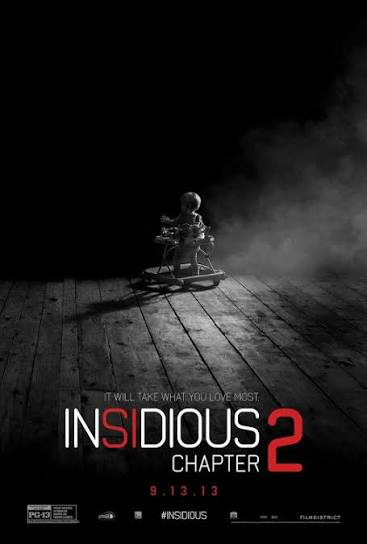
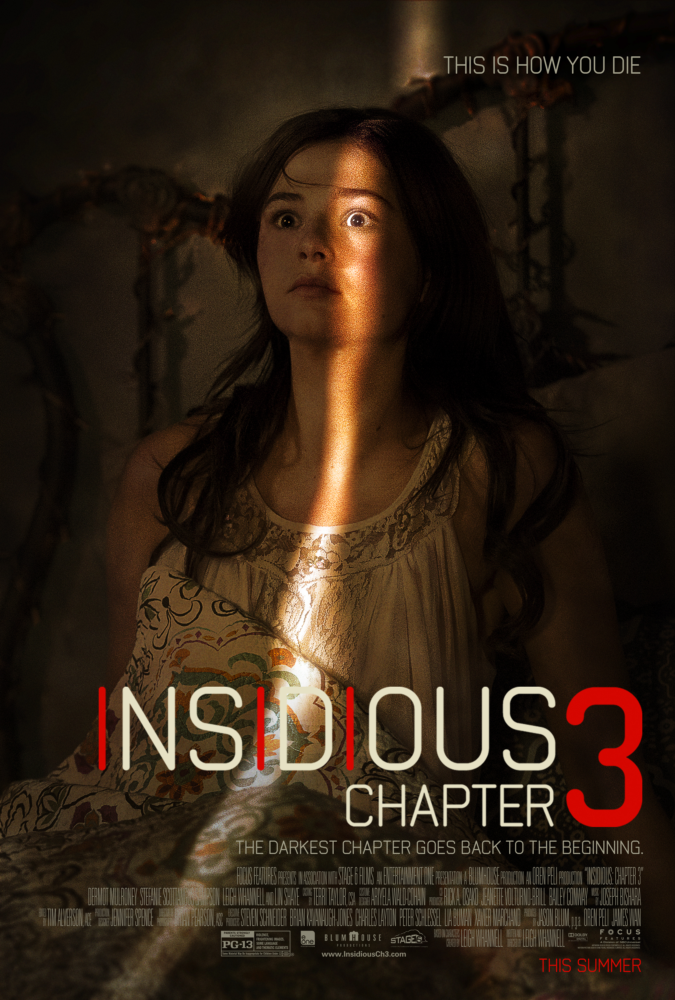
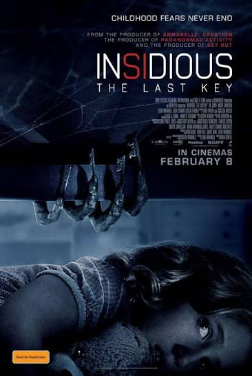

Other Insidious Films

Insidious
A family discovers that their son is trapped in a mysterious realm after falling into a coma.

Insidious: Chapter 2
The Lambert family continues to uncover the dark secrets surrounding their supernatural experiences.

Insidious: Chapter 3
A teenage girl seeks help from a psychic after accidentally awakening a dangerous spirit.

Insidious: The Last Key
Elise returns to her childhood home to confront a terrifying supernatural presence from her past.